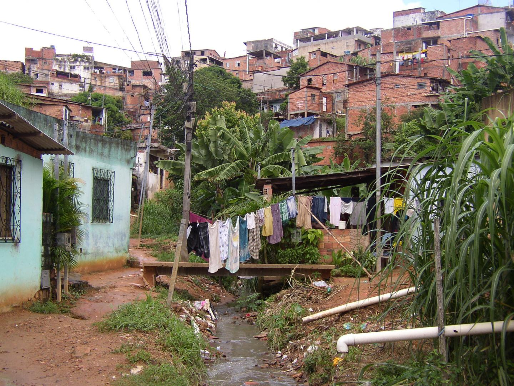

4 WEEK4
The learning diary of this week is about: Policies in cities, and how we can use RS technology to achieve the goals/ideas behind the policy. And here we give an example in Pau da Lima, City of Salvador, Brazil.
4.1 Policy
In this case study, the NEW!! World Cities Report 2022 is the intact referring policy. And the Chapter 10: Building Resilience for Sustainable Urban Futures (Page.334) is the section particularly been focused on. There are some of the Policy points mentioned in this part:
- Investing in key urban infrastructure must be a prerequisite for building sustainable and resilient urban futures.
- Policymakers must match urban risk assessments with appropriate solutions
- Visioning and implementation of urban resilience plans must prioritize the poorest and most vulnerable communities.
- Building urban resilience will not succeed without public participation.
So the infrastructure, urban risk, communities in disadvantage are highlighted here. It reminds us the vulnerability of slums and informal settlements due to the poor infrastructure is far from resilience.
Following the report, in 10.4. Environmental Resilience, it talks about raising awareness of different local urban risks and identification of feasible disaster prevention and preparedness. In which the discussion of flood is involved:
…focused principally on flood risk, with imaginative awareness raising strategies and mitigation strategies including a shift from traditional hard engineering solutions towards naturebased solutions and ecosystem services such as restoring and expanding riverine vegetation and floodplains…
And next, the report emphasizes on building resilience in slums and informal settlements, this is because people and areas there are facing particular vulnerabilities and high risks.
Therefore, referring the policy, this case study tried to pay attention to building resilience in slums and informal settlements. Focused principally on flood risk. The policy suggests that we could achieve the development of resilient cities with:
…imaginative awareness-raising strategies and mitigation strategies including a shift from traditional hard engineering solutions towards nature-based solutions and ecosystem services…
That is quite abstract. However, as RS technology is closely related to the nature, and can be used in both hard engineering and software system, I think we can achieve it.
4.2 Study Area and the Problem Desription
(Slum community) Pau da Lima, City of Salvador, Brazil

In total, 67% of the population of Salvador and 37% of the urban population in Brazil reside in slum communities with equal or greater levels of poverty as that found in Pau da Lima. And a tropical rainforest country, the average monthly precipitation is more than 60 mm, which shows that the area has a large amount of precipitation all year round. However, the area’s drainage system is unstable and has open sewers, so overflows often occur during periods of heavy rain, and the valley floor is prone to flooding. Sanitary conditions in the area are generally poor, and residents are often exposed to garbage and sewers. Besides, the buildings in slum areas are informal, so their structure is often unstable which will cause danger in storm rain periods.
4.3 Proposed Measures
4.3.1 Assessment
| Name | Notes | Aims | Data and Methods |
|---|---|---|---|
| Land-use and Land-cover recognition | The complex distribution of buildings in slum areas and the lack of a clear building plan make it difficult to map the areas. Furthermore, the Pau da Lim slum is in a valley area and is heavily vegetated, which makes it more difficult to classify land use | Identify the distribution of settlements, reservoirs, sewers, etc. in slums | Using multispectral or hyperspectral imagery, combined with image recognition and machine learning algorithm techniques; Using SAR for texture analysis to identify residential buildings |
| Terrain detection | For houses in low-lying areas and in flood-prone areas, the risk factor is higher in flooding | Assessment of the hazard index at the terrain level | Using LIDAR technology to obtain topographic elevations and generate DEM data |
| Physical safety of buildings measurement | Many buildings in slum areas are not built to code and have unstable roofs, which can easily fall off during heavy rainfall and cause injuries | Detection of dangerous buildings | Using VHR images to extract physical, geometric features of buildings |
| Environmental Assessment | Poor hygiene around the house, such as sewage running through or open piles of rubbish, can cause serious health problems when flooding | Analysis of the environmental health of the surroundings of the residence | Monitoring of water quality parameters (e.g. water temperature, cyanobacteria concentration, chlorophyll concentration, etc.) in water bodies using meteorological satellites for effluent identification |
4.3.2 Reconstruction
Referring to the results of the assessment, dangerous houses are rebuilt and houses in flood-prone areas unsuitable for building houses are relocated. In addition, the layout of sewerage pipes can be adapted to the land use situation, etc.
4.3.3 Monitoring
| Name | Aims | Data and Methods |
|---|---|---|
| Precipitation monitoring | Real-time monitoring of the relationship between soil moisture content and rainfall in the area to predict the occurrence of flooding | Using the Advanced SCATterometer (ASCAT) on MetOp for soil moisture observations, combined with the SM2RAIN-ASCAT global-scale rainfall product dataset for flooding predictions |
| Real-time detection of flooding disasters | Identification of the area currently affected by flooding | Using Landsat5TM data and the Normalised Difference Water Index (NDWI) for the extraction of water bodies. If the weather is bad, SAR can also be used too |
| Disaster assessment | Comparing remote sensing images before and after flooding | |
| Land use change analysis | Analysis of the expansion of the study area and adjustment of the drainage system to the changes in land use | Like the data and methods of Land-use and Land-cover recognition |
4.4 Summary and Reflection
From understanding, preventing, and to handling the flood disaster in slum areas, this case study shows the possibility that RS technology can be helpful when constructing a resilient city.
For the whole process, this study is about measuring the risk level of each area. Before the flood, planning to reconstruct the infrastructure like the drainage system, remove settlements in dangerous areas, etc, so we can defend against the flood better and minimize the damage it causes. And when the flood is coming, we hope there is a system that can predict its accuracy, giving people adequate reaction time. This would be with the help of a monitoring system. In addition, during and after the flood, the system can provide information on the impact of disasters in different regions. This is especially helpful for rescue and re-planning in the future.
The advantage of RS is its real-time response to environmental changes. This is crucial when dealing with issue associated with nature. Besides, as a technology based on data, it can well applied in different system, playing a role of information provider.
However, there are also certain challenges in applying RS in this case. The most nonnegligible and realistic point is the investment of money and professionals. Although urban issues and slum issues both involve geographic space and the social activities of people, the former are often considered worthy of costly long-term research. For the latter, a large number of existing slum rescue projects are based on “demolition” and “reconstruction”, so whether it is reasonable to invest a lot of manpower and money to build a RS system for an object that only exists for a limited time needs to be considered by the local government.
Of course, one solution is to build a flexible system that can be used in more than one place, no matter in downtown area or in slum. And this will face another major challenge, that is, the huge differences of areas.This includes, but is not limited to climate, topography, architectural structure and the stage of development of the city. Therefore, we need a large number of RS-based practices, so that we can provide references this kind of projects in the future.
And last, for the policy. I think most of the policies show a real ideal and satisfactory planning for the future city while some of them are very vague. if we can catch the essence of the policy, we may come up with measures that can achieve the goal. For example, the resiliency of the city seems very abstract. But if we are talking about cities responding to natural disasters quickly and effectively, then it will be clear what we suppose to do.
4.5 Reference
Munawar, H. S., Hammad, A. W., & Waller, S. T. (2022). Remote sensing methods for flood prediction: A review. Sensors, 22(3), 960.
Kuffer, M., Pfeffer, K., & Sliuzas, R. (2016). Slums from space—15 years of slum mapping using remote sensing. Remote Sensing, 8(6), 455.
Reis, R. B., Ribeiro, G. S., Felzemburgh, R. D., Santana, F. S., Mohr, S., Melendez, A. X., ... & Ko, A. I. (2008). Impact of environment and social gradient on Leptospira infection in urban slums. PLoS neglected tropical diseases, 2(4), e228.
Klemas, V. (2015). Remote sensing of floods and flood-prone areas: An overview. Journal of Coastal Research, 31(4), 1005-1013.